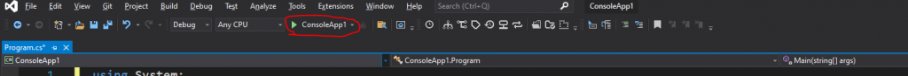

Osa 1: Ensimmäinen ohjelma
Tutustut C#-koodin rakenteeseen, kirjoitat ensimmäisen rivisi ja käynnistät sovelluksen Visual Studiossa.
Koodin rakenne
C#-koodi ja lähes kaikkien muiden ohjelmointikielten koodi kirjoitetaan aina lohkojen sisälle. Käytännössä luokat ja toiminnot laitetaan aaltosulkujen { } sisään.
Aaltosulut saat näppäinyhdistelmillä Alt Gr + 7 (aloitussulku {) ja Alt Gr + 0 (lopetussulku }). Visual Studio lisää yleensä lopetussulun automaattisesti.
C#-sovellukset hyödyntävät nimiavaruuksia. Nimiavaruus on kokoelma kirjastoja ja luokkia. Kirjasto on kokoelma valmiita luokkia ja metodeja, joita voit kutsua omassa koodissasi.
Tyhjä konsolisovellus
Kun luot Visual Studiossa uuden konsolisovelluksen, projekti sisältää valmiiksi tämän rungon. Kommentit (//) kertovat, mitä kukin osa tekee.
// Tämä kertoo, että tässä ohjelmassa käytetään nimiavaruutta System
// Joka antaa meidän käyttää oleellisia toimintoja
using System;
// Tämä määrittelee nimiavaruuden sovellukselle "ConsoleApp1"
// Jos haluamme käyttää tätä sovellusta toisessa sovelluksessa,
// tulee toiseen sovellukseen lisätä "using ConsoleApp1"
namespace ConsoleApp1
{
// Tämä määrittelee luokan Program, joka on pääsovelluksemme luokka
class Program
{
// Tämä määrittelee metodin Main
// Se on toiminto, jota kutsutaan aina kun sovellus käynnistetään
static void Main(string[] args)
{
// Tällä kutsumme Console-luokan WriteLine-toimintoa,
// jolla voidaan kirjoittaa konsoliin teksti "Hello World!"
Console.WriteLine("Hello World!");
}
}
}Kolme lohkoa
Esimerkissä on kolme erillistä lohkoa. Huomaa, että jokaisella lohkolla on aina aloitus { ja lopetus }, ja ne ovat eri kohdissa koodia.
- namespace ConsoleApp1 -lohko. Määrittää ohjelmalle oman nimiavaruuden.
- class Program -lohko. Sen sisälle lisätään kaikki ohjelman muuttujat ja toiminnot.
- static void Main -lohko. Sen sisälle kirjoitetaan koodin logiikka eli se, mitä halutaan tapahtuvan. Main-toiminto käydään läpi automaattisesti, kun sovellus käynnistetään.
Jokaisen rivin tarkoitus
| Koodi | Tarkoitus |
|---|---|
using System; | Kertoo, että ohjelmassa käytetään nimiavaruutta System. |
namespace ConsoleApp1 | Määrittelee nimiavaruuden ConsoleApp1. |
{ | Aloittaa koodilohkon edellä esitellylle nimiavaruudelle, luokalle tai metodille. |
class Program | Määrittelee luokan Program. |
static void Main(string[] args) | Määrittelee metodin Main. Ohjelman aloituspiste on aina staattinen Main-niminen metodi. |
Console.WriteLine("Hello World!"); | Kutsuu Console-luokan metodia WriteLine, joka tulostaa tekstiä komentoriville. Metodille annetaan parametriksi merkkijono "Hello World!". |
} | Lopettaa koodilohkon (metodin, luokan tai nimiavaruuden). |
Koodin kirjoittaminen
Aloitetaan käynnistämällä valmis Hello World -pohja, joka luodaan automaattisesti uusiin projekteihin. Keskitymme pelkästään Main-lohkon sisälle, johon koodi ja logiikka kirjoitetaan.
static void Main(string[] args)
{
Console.WriteLine("Hello World!");
}Puolipiste lopettaa rivin
Kaikki koodi, joka ei ole lohkomuodossa (eli aaltosulkujen sisällä), lopetetaan aina puolipisteeseen ; (Shift + pilkku). Puolipiste tulee siis aina yksittäisen koodirivin loppuun. Esimerkiksi Console.WriteLine("Hello World!"); päättyy puolipisteeseen.
Kun ohjelma ajetaan, puolipiste kertoo, että tämän koodirivin päätös on tässä. Sen jälkeen jatketaan seuraavalle koodiriville.
Sovelluksen käynnistäminen
Sovellus käynnistetään Visual Studion yläpalkista: vihreästä Start-nuolesta, jossa lukee sovelluksen nimi. Jos annoit sovellukselle jonkin muun nimen, ConsoleApp1-tekstin tilalla on sinun antamasi nimi.

Kun painat käynnistyspainiketta, Visual Studio kokoaa sovelluksen ajettavaksi (Compile) ja avaa konsoli-ikkunan, jonka ensimmäisellä rivillä lukee "Hello World!".
Hello World!Muokkaus
Muokataan "Hello World!" -tekstin tilalle jokin toinen teksti, esimerkiksi "Olen paras koodari!". Teksti kirjoitetaan Console-luokan WriteLine-toiminnon sisälle. WriteLine kirjoittaa annetun tekstin eli merkkijonon konsoliin.
static void Main(string[] args)
{
Console.WriteLine("Olen paras koodari!");
}Merkkijono on tietotyyppiä string, jota käsitellään seuraavassa osassa. Aina kun kirjoitat merkkijonon, laita se lainausmerkkien sisään, esimerkiksi "teksti".
Käynnistä sovellus uudelleen, niin näet muutoksen konsoli-ikkunassa:
Olen paras koodari!Harjoitukset
Tämän osan harjoitukset tehdään ja palautetaan Moodlessa.